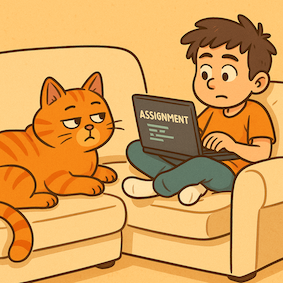

The lazy approach
On this site I’ve taken what I proudly call the lazy approach: instead of spending hours brainstorming concepts, writing copy, and designing visuals, I asked ChatGPT to do it all for me. Every piece of text you see here, along with any image descriptions or ideas, has been generated with the help of an AI assistant. My role has mainly been to copy, paste, and make small adjustments where needed. This way I can focus on learning the technical side of HTML5—structure, tags, and layout—while outsourcing the “creative” work to artificial intelligence.
- my favorite lazy cat 
- I have always been a lazy boy
- hmm no offence
I apologise, but I am not a very creative person, so before the AI age I was unable to make a site due to the need for content, I apologise for my theme here, I am not trying to offend anybody